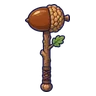
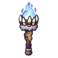
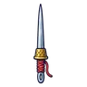
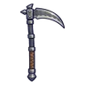
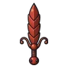
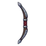
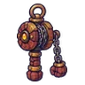
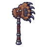
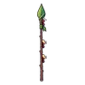
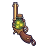

เหมืองมด ชั้น B2
ดูบนแผนที่และวิธีไป วางแผนฟาร์ม
ดันเจี้ยนในป่ากองไฟ · Lv 25–38
ชั้นล่าง / ดันเจี้ยน
มอนในแมพ (6)
อุปกรณ์ที่ดรอปในแมพนี้
| ของ | โอกาสสูงสุด |
|---|---|
| 0.25% | |
 ค้อนยักษ์ลูกโอ๊ก | 0.25% |
 คบเพลิงเขี้ยวหมาป่า | 0.25% |
 ดาบคู่เข็มเย็บผ้า | 0.25% |
 เคียวใหญ่เหล็กตีมือ | 0.25% |
 ดาบทหารมด | 0.25% |
 ธนูยาวเหล็กกล้า | 0.25% |
 ด้ายเหล็กหมัดโกเลม | 0.25% |
 ขวานยักษ์อุ้งเท้าหมี | 0.25% |
| ชุดนักเดินทางป่า | 0.15% |
| ชุดนักสำรวจเหมือง | 0.15% |
| ชุดโหราดาว | 0.15% |
| เกราะหนังหมูป่า | 0.15% |
 หอกยาวกิ่งไม้มดงาน | 0.12% |
 ปืนพกคู่หิ่งห้อย | 0.12% |